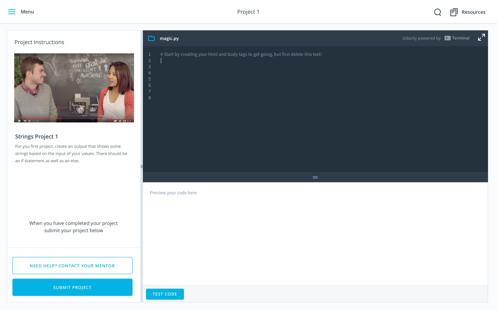
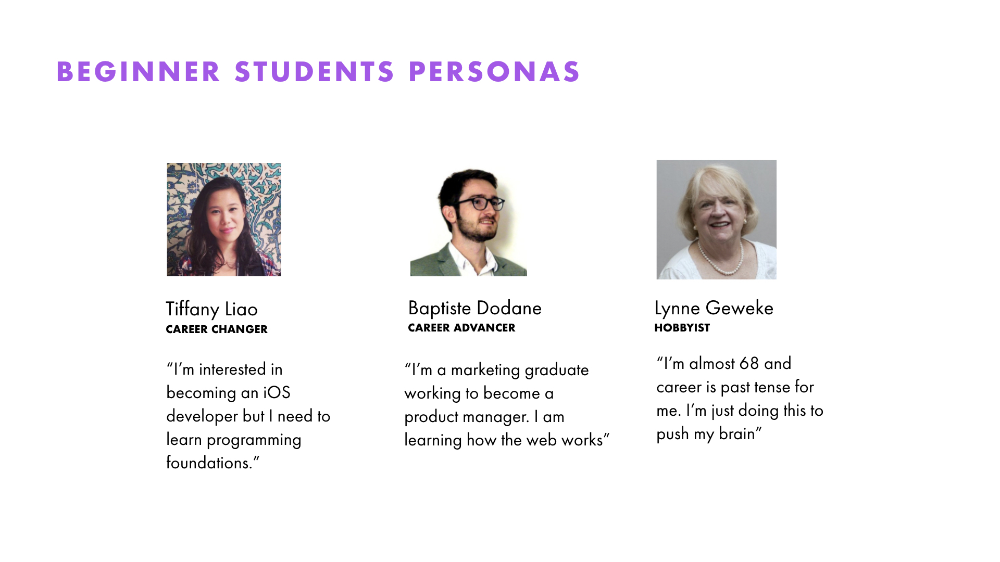
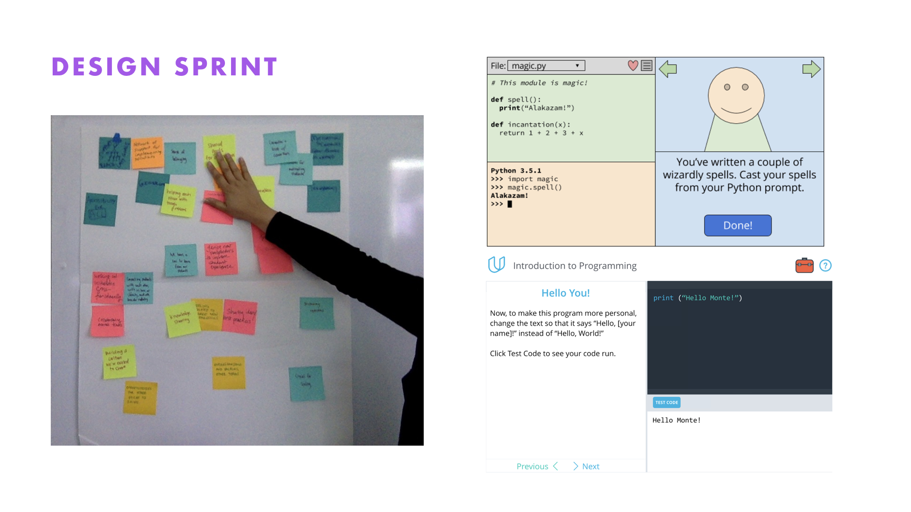
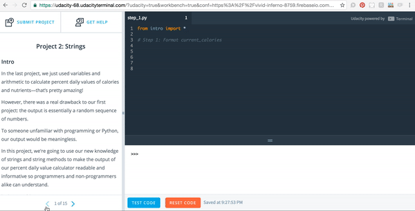
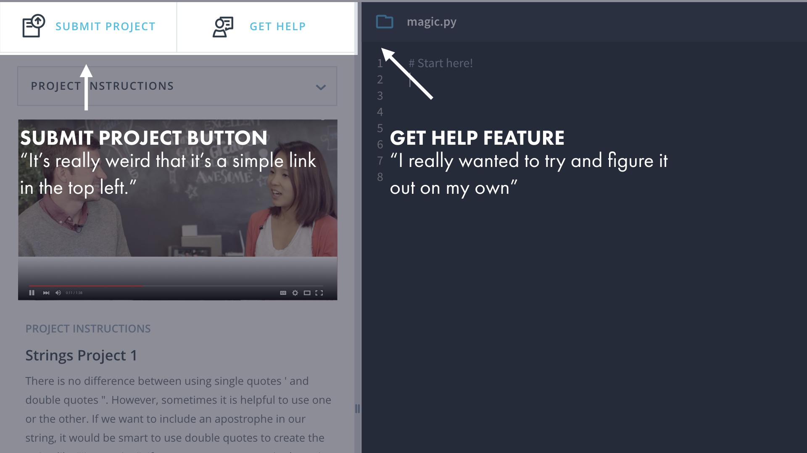
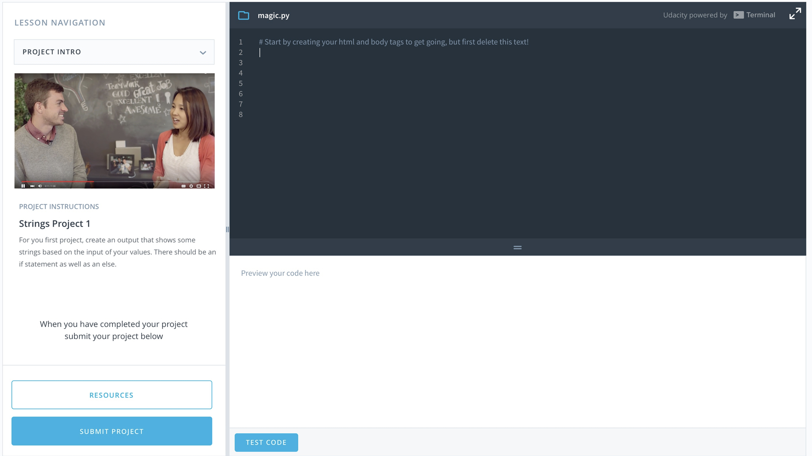
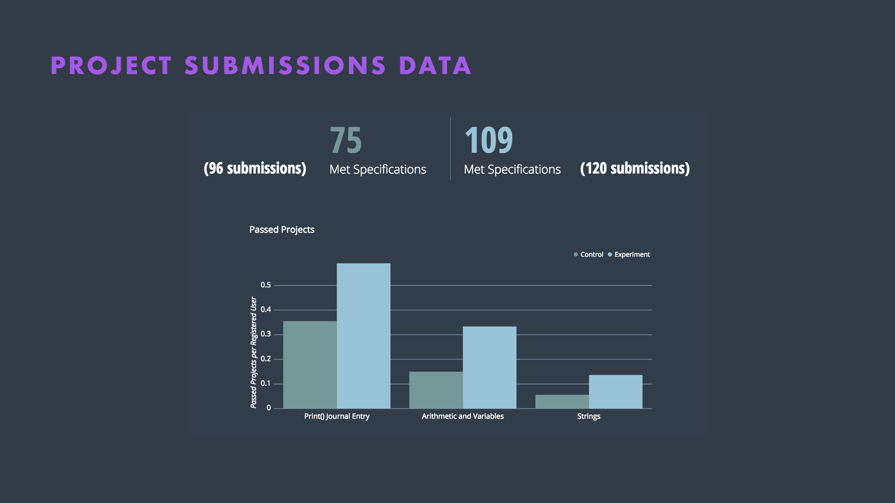
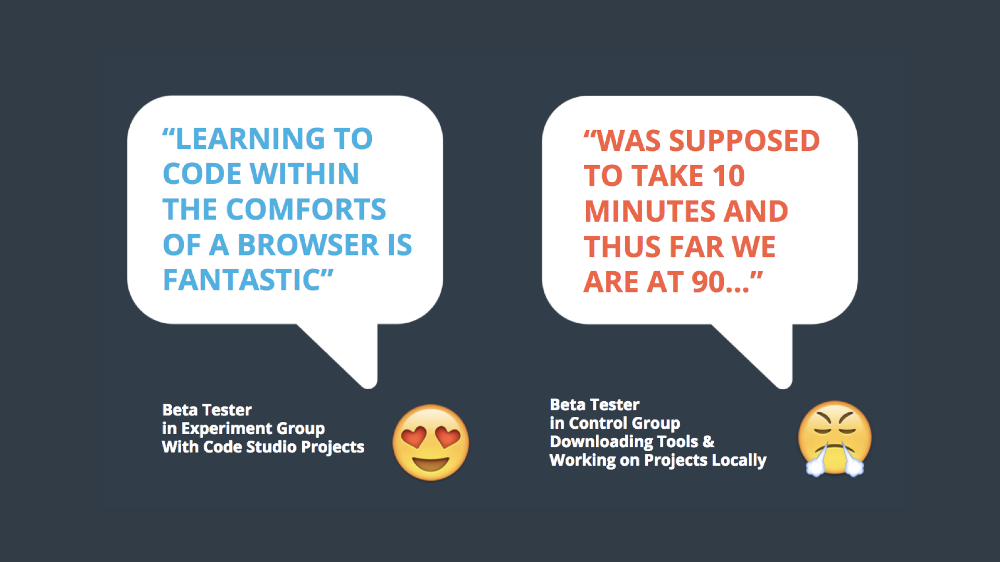

The Code Studio
I led the product development an in-browser coding environment.

The Problem
Students were quitting Udacity Nanodegree Programs at extremely high rates before submitting their first project. I wanted to explore why.
The Research
I conducted phone interviews, surveys, and emailing campaigns to understand beginner students. From the research, I discovered three user personas.

I also learned that beginner students consistently expressed frustration over different tools they needed to use and the difficulty of submitting a project.
The Design Process
My team participated in cross-team Google style sprint to evaluate how we we create an empowering learning environment for beginner students. We decided to execute on the idea of designing an in-browser coding environment. We sketched, created a wireframe, and tested a low fidelity prototype with users.

Based on the positive feedback, we moved forward with a high fidelity prototype.

I ran three rounds of usability tests on the inital design.

The tests revealed confusion over interface. Users missed the submit project button, avoided using the get help feature, and misunderstood the reset code functionality.We iterated on the inital design and decided to make the main call to action (Submit Project) more prominent.

The Impact
The final implementation launched to beta testers in an A/B test. Our hypothesis was to increase project submission by 33%.
Our final results showed 45.3% increase of passing project submissions and a 25% total increase of all project submissions.

This data proved that an in-classroom coding environment could positively affect project sumbissions and retention within the beginning stages of our nanodegree.

Read more about the Code Studio
here.